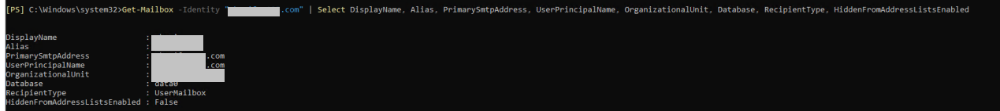

After Active Directory user restoration is complete, you need to update the user mailbox status at the production end, create an Active Directory user, and bind the user to the restored mailbox to verify the restored user mailbox data.
Procedure
- Query the mailbox to be restored and the information about the old user bound to the mailbox.
- Log in to the client where the target Exchange Server is located as an administrator.
- Open Exchange Management Shell.
- Run the following command:
Get-Mailbox -Identity "Mailbox address" | Select DisplayName, Alias, PrimarySmtpAddress, UserPrincipalName, OrganizationalUnit, Database, RecipientType, HiddenFromAddressListsEnabled
Assuming that Windows Server 2016 is used, the command output is as follows:

- Restore the queried Active Directory user. For details, see Restoring Active Directory Objects in the Scenario with a Single Domain Controller.
An error will be reported when you log in to the restored mailbox. In this case, restore the mailbox data by referring to 3 to 4.
- After the restoration is complete, run the following command to clear the binding relationship between the old user and the mailbox:
Disable-Mailbox -Identity "Username"
Assuming that Windows Server 2016 is used, the command output is as follows:
- Bind the user restored in 2 to the mailbox.
- Log in to the Exchange mailbox management page. The login address is https://Management IP address/ecp.
- In the navigation pane, choose recipients and click the mailboxes tab.
- Click
 and select Connect a mailbox.
and select Connect a mailbox.The connect a mailbox dialog box is displayed.
- Select a server and select the mailbox to be connected.
- Click
 .
.A dialog box is displayed for your confirmation.
- Select Yes, connect to the user account above.

If you select No, I want to connect to a different user account, select the user account to be connected in the dialog box that is displayed.
- Click Finish.
- View and log in to the mailbox.